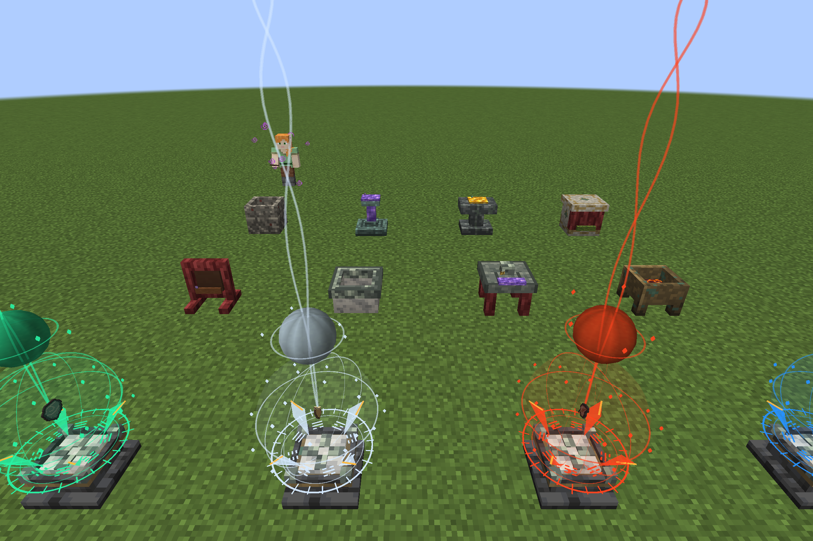
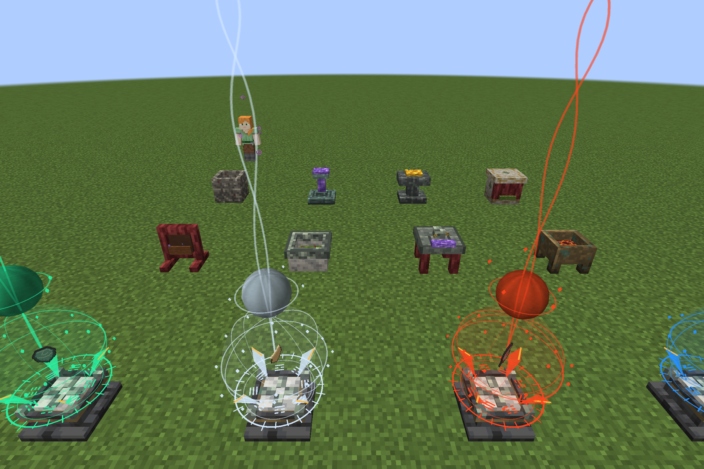
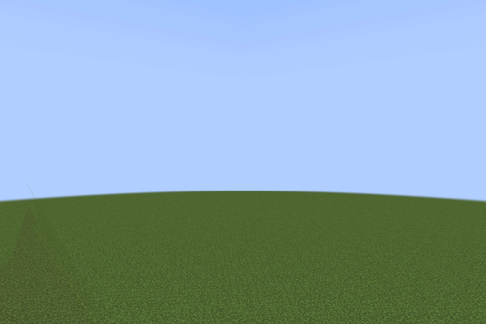
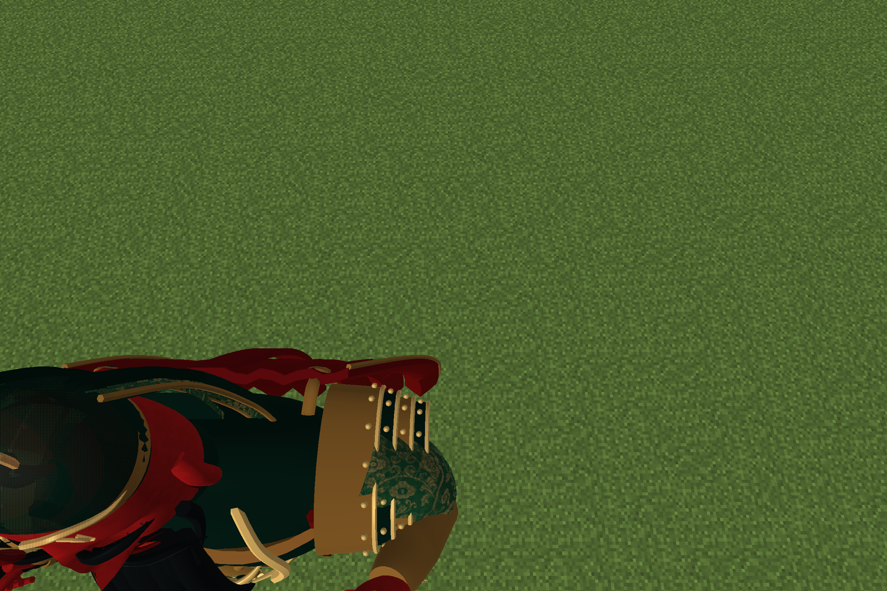
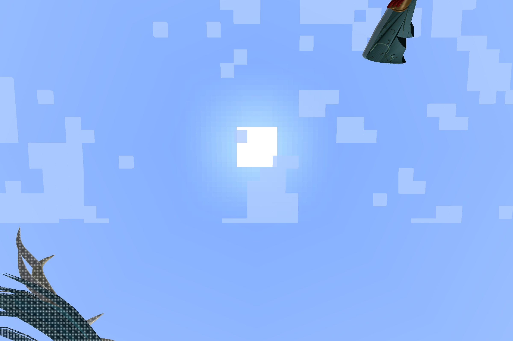
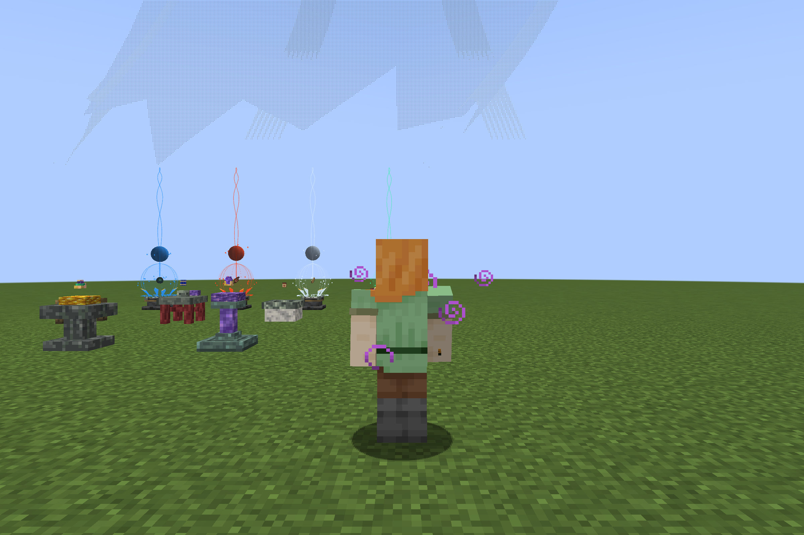

Dynasty · 统一精修验收
基于现有祭坛、人物骨骼与原创建筑资源；未修改玩家建筑存档。以下游戏画面来自独立测试世界，不是效果图。
八种工坊 · 逐件投入
空槽
投入一件
中途进度完成，空手右键取出成品
四象完成标记 / 六件法器
青龙、白虎、朱雀、玄武小球只依完成状态出现。六件物品：冥垣镇魂灯、龙脉棱心、承阙修兵印、征武誓契、宙光星简、赤霄焰种。
武器摄像机近裁剪回归




保留关羽体量；针对进入摄像机的近距离内表面和透明深度处理。完整多人实战仍待验收。
巨人庭院 · 实际打包方块俯视图

中轴线及原有水景保留。新增巨人练武桩、巨型兵器架、会武石桌、镇庭石座；统一两侧院落铺地。此图为资源方块的俯视投影，不是完整游戏内建筑截图。
游戏测试入口
独立测试存档中使用创造物品栏搜索工坊及六件物品。工坊按照 JEI 配方顺序，每次右键投入一件，完成后空手取出。四象完成后退出再进入检查对应小球。新建筑只在主世界未生成区块寻找，极低密度；不会回填已探索区域。